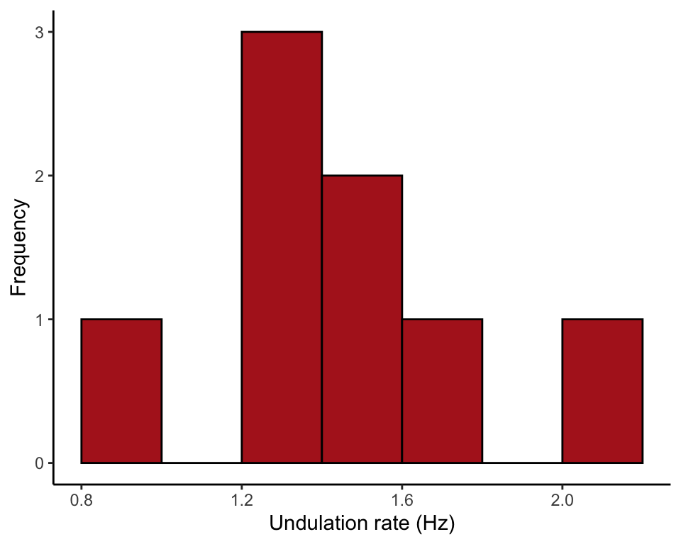
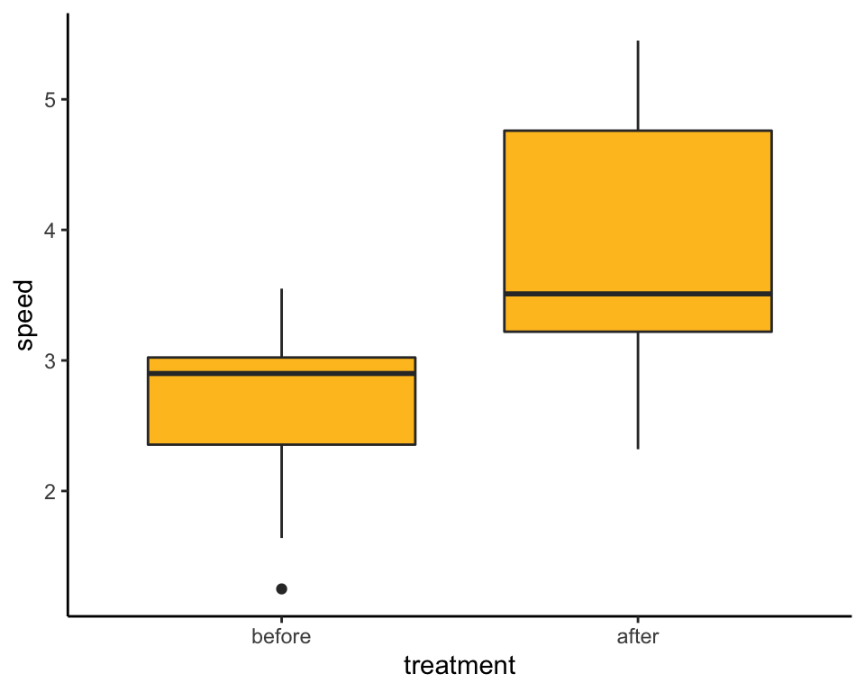
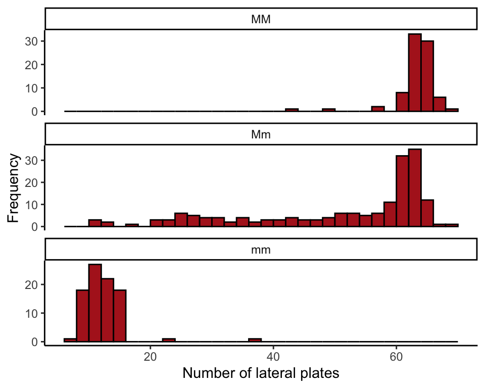
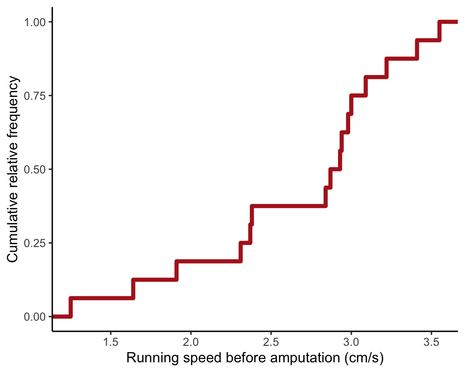

R code for examples in Chapter 3:
Describing data
We used R to analyze all examples in Chapter 3. We put the code here so that you can too.
Also see our lab on describing data using R.
New methods on this page
-
Sample mean, when there are no missing
(NA)entries:mean(snakeData$undulationRate) -
Standard deviation, when there are no missing
(NA)entries:sd(snakeData$undulationRate) -
Calculate a statistic by group, when there are no missing
(NA)entries:summarize(group_by(sticklebackData, genotype), Mean = mean(plates)) -
Extract a subset of data from a data frame:
subset(spiderData, treatment == "before") -
Other new methods:
- Variance and coefficient of variation.
- Median and interquartile range.
- Round to a preferred number of decimals.
- Cumulative frequency distribution.
- Table of descriptive statistics by group.
- Mean and standard deviation from a frequency table.
- Order categories of a categorical variable in tables and graphs.
Load required packages
We’ll use the ggplot2 package to make plots and the dplyr package to tabulate summary statistics.
library(ggplot2)
library(dplyr)Example 3.1-1. Gliding snakes
Sample mean, standard deviation, variance and coefficient of variation of undulation rate of 8 gliding paradise tree snakes, in Hz.
Read and inspect data
snakeData <- read.csv(url("https://whitlockschluter3e.zoology.ubc.ca/Data/chapter03/chap03e1GlidingSnakes.csv"), stringsAsFactors = FALSE)
head(snakeData)## snake undulationRateHz
## 1 1 0.9
## 2 2 1.2
## 3 3 1.2
## 4 4 1.3
## 5 5 1.4
## 6 6 1.4Histogram
This is the histogram of Figure 3.1-1.
ggplot(data = snakeData, aes(x = undulationRateHz)) +
geom_histogram(fill = "firebrick", col = "black",
breaks = seq(0.8, 2.2, by = 0.2), boundary = 0, closed = "left") +
labs(x = "Undulation rate (Hz)", y = "Frequency") +
theme_classic()
Mean, standard deviation, variance
Calculate the mean, standard deviation and variance of the undulation rates.
mean(snakeData$undulationRate)## [1] 1.375sd(snakeData$undulationRate)## [1] 0.324037var(snakeData$undulationRate)## [1] 0.105Coefficient of variation.
100 * sd(snakeData$undulationRate)/mean(snakeData$undulationRate)## [1] 23.56633Table 3.1-2. Numbers of convictions
Mean and standard deviation from a frequency table. The data are from Chapter 2.
Read and inspect the data.
The data are stored as a frequency table of the number of convictions.
convictionsFreq <- read.csv(url("https://whitlockschluter3e.zoology.ubc.ca/Data/chapter03/chap03t1_2ConvictionsFreq.csv"), stringsAsFactors = FALSE)
head(convictionsFreq)## convictions frequency
## 1 0 265
## 2 1 49
## 3 2 21
## 4 3 19
## 5 4 10
## 6 5 10rep() command
First, use the rep() command to repeat each value in the table, the number of times according to frequency. Here, we store the result in convictions.
convictions <- rep(convictionsFreq$convictions, convictionsFreq$frequency)Mean and standard deviation
mean(convictions)## [1] 1.126582sd(convictions)## [1] 2.456562These operations won’t work if there are missing values in the data set. If missing values are present it is necessary to add an argument to the command as follows.
mean(convictions, na.rm = TRUE)## [1] 1.126582sd(convictions, na.rm = TRUE)## [1] 2.456562Example 3.2. Spider running speed
Median, interquartile range, and box plot of running speed (cm/s) of male Tidarren spiders.
Read and inspect data
The data are in “long” format. One variable indicates running speed, and a second variable gives treatment (before vs after amputation). Therefore, every individual spider is on two rows, once for its before-amputation measurement and one for its after-amputation measurement.
spiderData <- read.csv(url("https://whitlockschluter3e.zoology.ubc.ca/Data/chapter03/chap03e2SpiderAmputation.csv"), stringsAsFactors = FALSE)
head(spiderData)## spider speed treatment
## 1 1 1.25 before
## 2 2 2.94 before
## 3 3 2.38 before
## 4 4 3.09 before
## 5 5 3.41 before
## 6 6 3.00 beforeBox plot
Begin by ordering the treatment levels so that the “before” amputation measurements come before the “after” measurements in the plot.
spiderData$treatment <- factor(spiderData$treatment, levels = c("before", "after"))
ggplot(spiderData, aes(x = treatment, y = speed)) +
geom_boxplot(fill = "goldenrod1") +
theme_classic()
Sample median
First, extract the before-amputation data using subset(). Note the double equal sign “==” needed in the logical statement, which indicates “is equal to” in R. Save the result in a new data frame named speedBefore.
speedBefore <- subset(spiderData, treatment == "before")
speedBefore## spider speed treatment
## 1 1 1.25 before
## 2 2 2.94 before
## 3 3 2.38 before
## 4 4 3.09 before
## 5 5 3.41 before
## 6 6 3.00 before
## 7 7 2.31 before
## 8 8 2.93 before
## 9 9 2.98 before
## 10 10 3.55 before
## 11 11 2.84 before
## 12 12 1.64 before
## 13 13 3.22 before
## 14 14 2.87 before
## 15 15 2.37 before
## 16 16 1.91 beforeSample median
median(speedBefore$speed)## [1] 2.9First and third quartiles
Calculate the first and third quartiles of before-amputation running speed (0.25 and 0.75 quantiles). Type = 5 reproduces the method we use in the book to calculate quartiles.
quantile(speedBefore$speed, probs = c(0.25, 0.75), type = 5)## 25% 75%
## 2.340 3.045Interquartile range
Calculate the interquartile range of before-amputation running speed. The argument type = 5 reproduces the method we use in the book to calculate quartiles.
IQR(speedBefore$speed, type = 5)## [1] 0.705Example 3.3. Stickleback lateral plates
Draw multiple histograms and produce a table of descriptive statistics by group for plate numbers of three stickleback genotypes. We also include a table of frequencies and proportions of stickleback genotypes.
Download and inspect the data.
sticklebackData <- read.csv(url("https://whitlockschluter3e.zoology.ubc.ca/Data/chapter03/chap03e3SticklebackPlates.csv"), stringsAsFactors = FALSE)
head(sticklebackData)## id plates genotype
## 1 4-1 11 mm
## 2 4-2 63 Mm
## 3 4-4 22 Mm
## 4 4-5 10 Mm
## 5 4-10 14 mm
## 6 4-12 11 mmOrder genotypes
Begin by setting the preferred order of the three genotypes in the figure.
sticklebackData$genotype <- factor(sticklebackData$genotype,
levels = c("MM","Mm","mm"))Multiple histograms
One histogram per genotype, stacked vertically, all using the same x-axis scale.
ggplot(sticklebackData, aes(x = plates)) +
geom_histogram(fill = "firebrick", col = "black",
boundary = 0, closed = "left", binwidth = 2) +
labs(x = "Number of lateral plates", y = "Frequency") +
facet_wrap( ~ genotype, ncol = 1, scales = "free_y") +
theme_classic()
Statistics by group
We’ll use the summarize() command from the dplyr package. The commands below assume that the variables contain no missing (NA) elements. The n() function calculates the number of cases. The function round(x, digits = 1) rounds the contents of x to the desired number of decimal places (here, 1).
sticklebackTable <- summarize(group_by(sticklebackData, genotype),
n = n(),
Mean = round( mean(plates), digits = 1 ),
Median = median(plates),
Std.dev = round( sd(plates), digits = 1),
Interq.range = IQR(plates, type = 5))
data.frame(sticklebackTable)## genotype n Mean Median Std.dev Interq.range
## 1 MM 82 62.8 63 3.4 2
## 2 Mm 174 50.4 59 15.1 21
## 3 mm 88 11.7 11 3.6 3Figure 3.4-1. Spider running speed
Draw a cumulative frequency distribution of running speed before amputation.
Cumulative frequency distribution
ggplot(speedBefore, aes(x = speed)) +
stat_ecdf(color = "firebrick", size = 1.5) +
labs(x = "Running speed before amputation (cm/s)",
y = "Cumulative relative frequency") +
theme_classic()
Table 3.5-1. Genotype frequencies
Make a table of frequencies and proportions of the stickleback genotypes. Here we used summarize() from the dplyr package
Make table
sticklebackTable <- summarize(group_by(sticklebackData, genotype),
n = n())
sticklebackTable$Proportion <- sticklebackTable$n/sum(sticklebackTable$n)
data.frame(sticklebackTable)## genotype n Proportion
## 1 MM 82 0.2383721
## 2 Mm 174 0.5058140
## 3 mm 88 0.2558140The table would look even better if you rounded the proportions (give this a try).